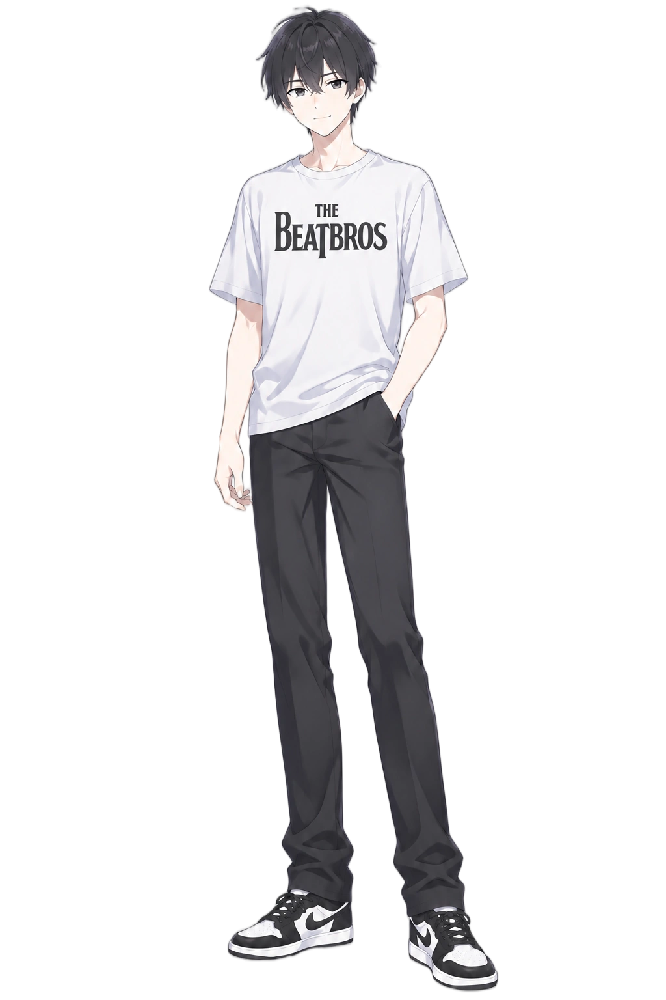
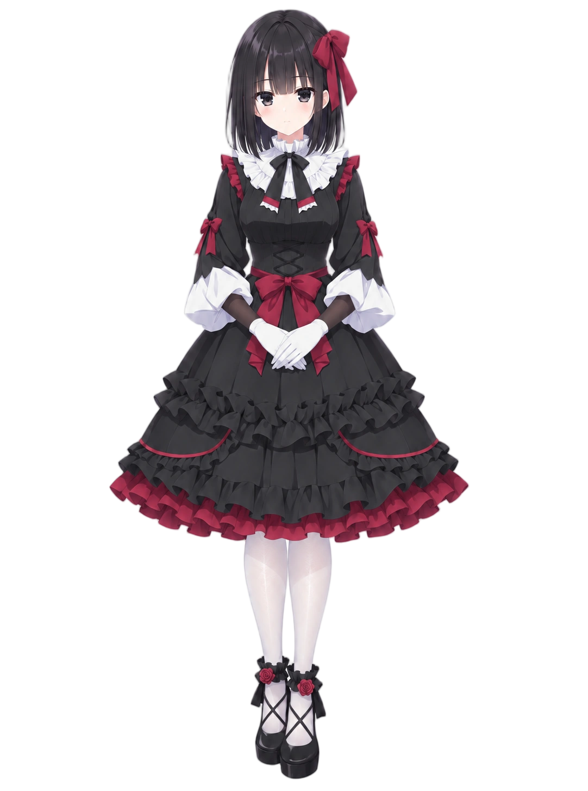
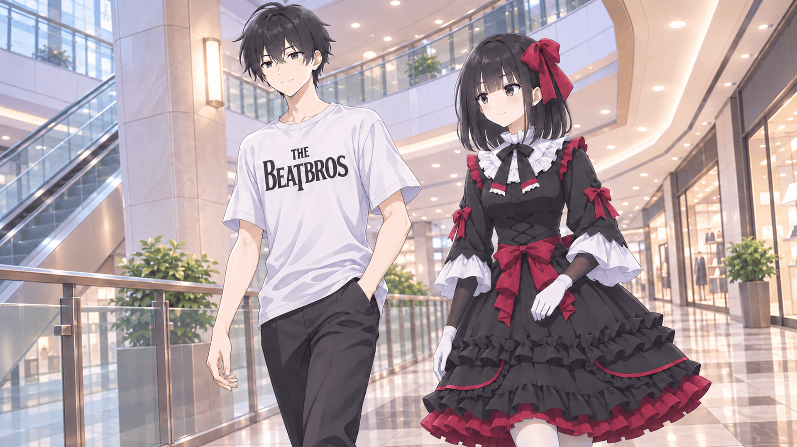
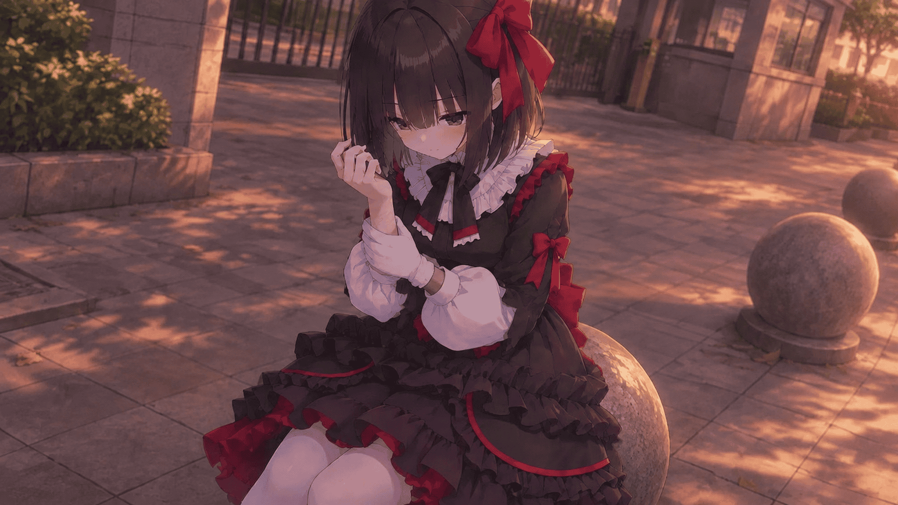
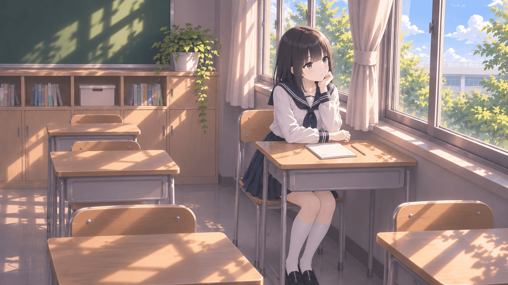

CHARACTER 01
BAI JIUZHOU
白九洲
「比起说话，或许我更擅长敲代码？」
一名普通的高中生，曾经热衷于信息学竞赛，如今则把更多时间花在游戏和动漫上。
性格随和，偶尔会有些不着调。面对熟悉的话题总能滔滔不绝，但在与人相处时，又常常显得有些迟钝。
原本平静的暑假，因为一条偶然的点赞动态，迎来了一位许久未见的老同学。
A SUMMER, A REUNION
一场久违的重逢，一段重新开始的故事。
白九洲从未想过，自己还会再次与闲七灵产生交集。一次偶然的点赞，让两条原本渐行渐远的生活轨迹重新有了交点。不久之后，那个曾经出现在他记忆中的女孩，再次来到了他的面前。
「好久不见。」一句简单的问候，似乎并不足以概括两人之间的关系。从最初略显生疏的交谈，到后来逐渐熟悉的相处；从偶尔的见面，到手机屏幕上断断续续的消息。原本平静的日常，也因为另一个人的出现而有了些许不同。
只是，闲七灵似乎并不像表面上看起来那么简单。那些没有说出口的话，那些刻意避开的事情，以及记忆深处早已模糊的片段，都在这段重新开始的关系中留下了痕迹。
这个夏天，白九洲将再次认识闲七灵。而这一次，他们的故事会走向怎样的结局？

BAI JIUZHOU
一名普通的高中生，曾经热衷于信息学竞赛，如今则把更多时间花在游戏和动漫上。
性格随和，偶尔会有些不着调。面对熟悉的话题总能滔滔不绝，但在与人相处时，又常常显得有些迟钝。
原本平静的暑假，因为一条偶然的点赞动态，迎来了一位许久未见的老同学。
XIAN QILING
白九洲的小学同学。时隔多年再次相见，已经成为了一位颇有魅力的少女。
喜欢漂亮的衣服，性格活泼，擅长寻找话题，也很喜欢看着白九洲不知所措的样子。偶尔会说些让人摸不着头脑的话，似乎总能轻易掌握交谈的节奏。
不过，在那些轻松愉快的日常背后，她似乎还有着不愿向人提起的过去。

夏日会过去，
但有些记忆不会因此消失。
故事中的片段与风景。



一部原创视觉小说作品。
选择适合你的平台。
适用于 Windows 电脑。
下载 Windows 版本适用于 Android 手机和平板。
下载 Android 版本THANK YOU FOR YOUR INTEREST
感谢你关注《夏日重逢》。
返回顶部 ↑